Modal Logic: More Tableaux Examples
2026-02-23
Midterm
Logistics
- The exam will be eight questions long.
- The questions will be like the ones on this week’s quiz and the practice exam.
- It will be here, with answers to be done on paper.
- We’ll find a separate room (to be announced) for folks needing accommodations.
- You’ll get the cheat sheet, but otherwise it is closed book.
Quiz 6
Question 1
\(\Box(A \vee B) \rightarrow (\Diamond A \vee \Box B) \text{ is a theorem of } **KT**\)
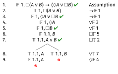
Figure 1
Question 2
\(\Box (A \rightarrow B) \rightarrow (A \rightarrow \Box B) \text{ is not a theorem of } **KT**\)
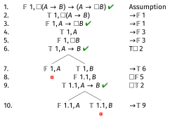
Figure 2
Question 2
The middle branch stays open, and the open-ended instruction at line 2 has been applied everywhere that’s needed.
The counterexample is where \(A\) and \(B\) are both true at \(w_1\) and both false at \(w_{1.1}\).
Question 3
\(\Box A \rightarrow (A \wedge \Box \Box A) \text{ is not a theorem of } **K4**\)
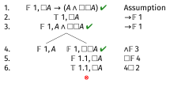
Figure 3
Question 3
The left hand branch stays open. The counterexample is the somewhat degenerate model where \(w_1\) can’t access anything, and has \(A\) false.
Question 4
\(\Diamond (A \rightarrow \Diamond B) \rightarrow (\Box A \rightarrow \Diamond (A \wedge B)) \text{ is a theorem of } **K4**\)
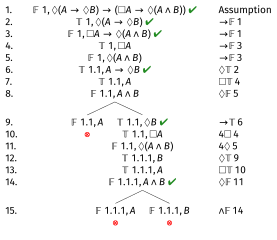
Figure 4
Question 5
\(\Diamond (A \wedge B) \rightarrow \Box \Diamond (C \rightarrow B) \text{ is not a theorem of } **S4**\)
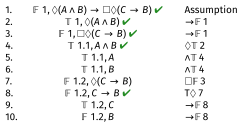
Figure 5
Question 5
The trunk stays open, and we’ve applied the open-ended rule everywhere it needs to be applied.
The countermodel has \(w_1\), which can access \(w_{1.1}\) and \(w_{1.2}\). At \(w_{1.1}\) both \(A\) and \(B\) are true. At \(w_{1.2}\), \(C\) is true and \(B\) is false.
Any way of filling in the other values will still create a counterexample.
Question 6
\(\Diamond \Diamond A \rightarrow (\Diamond A \wedge \Diamond \Diamond \Diamond A) \text{ is a theorem of } **S4**\)
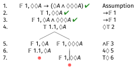
Figure 6
There are a lot of ways to close this one; this is the quickest I found but it’s definitely not the only one.
Question 7
\(\Diamond \Box A \rightarrow \Diamond A \text{ is a theorem of } **KTB**\)
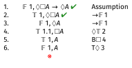
Figure 7
Question 8
\((\Box A \wedge \Box B) \rightarrow \Box \Box (A \rightarrow B) \text{ is a not theorem of } **KTB**\)
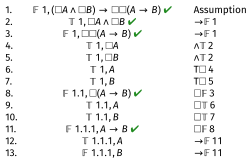
Figure 8
Question 8
The tableau is open.
The countermodel takes a bit more work to describe than the previous ones.
There are three worlds, \(w_1\), \(w_{1.1}\) and \(w_{1.1.1}\).
Every world can access every world , \(w_1\) and \(w_{1.1.1}\) can access each other.
By the naming convention, \(w_1Rw_{1.1}\) and \(w_{1.1}Rw_{1.1.1}\); adding reflexivity and symmetry get us the rest of the relations.
\(A\) is true at all three worlds, \(B\) is true at the first and second, but not the third.
Practice Exam
Question 1
\(\Box(\Box p \rightarrow (q \vee r)) \vee \Box(\Box q \rightarrow p)\) in S5
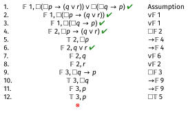
Figure 09
The only branch closes, so this is valid in S5.
Question 2
\(\Diamond \Box (p \rightarrow q) \rightarrow (\Box p \rightarrow \Diamond q)\) in S5
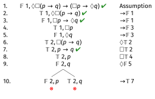
Figure 10
Both branches close, so this is valid in S5.
Question 3
\(\Box (p \vee q) \rightarrow (\Diamond (\neg q \vee r) \rightarrow \Diamond (p \vee r))\) in S5
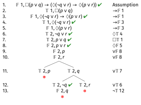
Figure 11
All branches close, so this is valid in S5.
Question 4
\((\neg \Diamond p \vee \neg \Diamond \Diamond p) \rightarrow \neg \Diamond \Diamond \Diamond p\) in S5
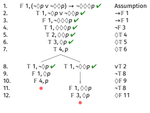
Figure 12
Both branches close, so this is valid in S5. There are many ways to close this one; this is the fastest I found, but it’s definitely not the only way.
Question 5
\((\Diamond p \wedge \Box q) \rightarrow \Diamond q\) in K
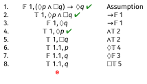
Figure 13
The trunk closes, so it is valid in K. The role of \(\Diamond p\) in this one is weird.
Question 6
\(\Box (p \wedge \neg p) \vee \Diamond (q \vee \neg q)\) in K
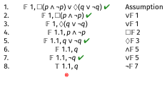
Figure 14
This is also valid, and it’s also wrong for the same reason.
Question 6
Not at all on the test digression.
This example shows that K has a very weird property. It is not Halldén-complete.
A logician, Sören Halldén, in the 1950s noticed that some logics have the odd property that \(X \vee Y\) is a theorem even though (a) neither \(X\) nor \(Y\) is, and (b) \(X\) and \(Y\) have no variables in common.
We’ve come to call such logics Halldén-incomplete, and the opposite property Halldén-completeness.
In general, the logics that are interesting and get used in philosophical applications are Halldén-complete.
Question 7
\(\Box \neg(p \vee \neg q) \rightarrow \Box p\) in K
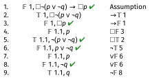
Figure 15
The tree is open, so this is not a theorem, it is invalid in K. The countermodel has two worlds: \(w_1\) and \(w_1.1\), with \(w_1Rw_{1.1}\). At \(w_{1.1}\), \(p\) is false and \(q\) is true.
Question 8
\(\Box(p \rightarrow (q \wedge r)) \rightarrow (\Diamond \Diamond p \rightarrow \Diamond (q \vee s))\) in K
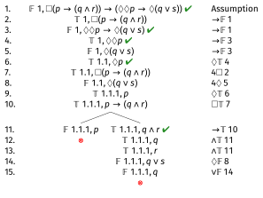
Figure 16
All the branches close, so this is valid.
Question 9
\((\Diamond \Box p \wedge \Diamond \Box q) \rightarrow \Diamond(p \wedge q)\) in K
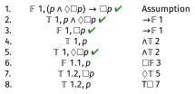
Figure 17
Question 9
This is open, so it isn’t valid.
The countermodel has three worlds, \(w_1\), \(w_{1.1}\) and \(w_{1.2}\).
\(w_1\) can access everything, the other two can only access themselves. And \(p\) is true at \(w_1\) and \(w_{1.2}\), but false at \(w_{1.1}\).
Question 10
\(\Box \Diamond \Box \Diamond p \rightarrow \Box \Diamond p\) in K
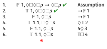
Figure 18
The trunk closes, so this is valid. There are of ways to do this one; this is one of the more direct.

PHIL 305 | University of Michigan